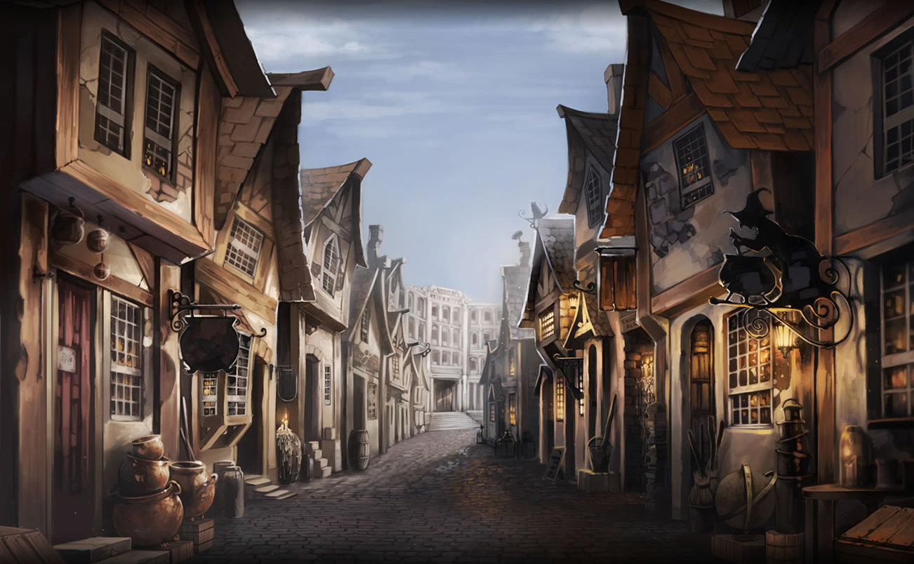
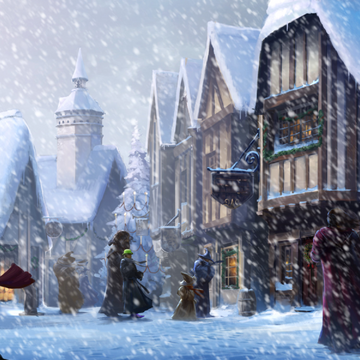
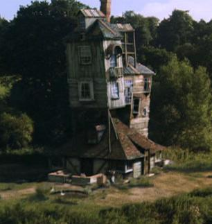
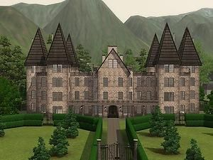
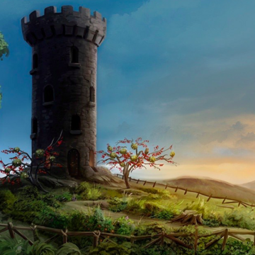

Places
There are many different locations in the wizarding world. Here are some of them.
Hogwarts

Hogwarts is the main location where a large portion of the series takes place. It's a wizarding school in Britian and where all the main character go to school. It's split into four houses: Gryffindor, Ravenclaw, Hufflepuff, and Slytherin.

Diagon Alley
Diagon Alley is the first wizarding world location Harry visited. It's where students attending Hogwarts shop for their school supplies.
Hogmeade
Hogsmeade is a wizarding village near Hogwarts. Hogwarts students who are 3rd years and above are allowed to visit Hogsmeade on certain weekends to shop for all sorts of things.
The Burrow
The Burrow is the home of the Weasley family. It's a special place to Harry, as the Weasleys treated him as a part of their family, unlike his aunt and uncle, who "raised" him.
Malfoy Manor
Malfoy Manor is where the Malfoy family lives. It was used as a base for the Death Eaters in the 7th book. Harry, Ron, and Hermione were taken here after being captured. A few other people were also held prisoner here.
The Lovegood Home
This is where Luna Lovegood and her father live. Harry, Ron, and Hermione visited this house to ask Luna's father, Xenophelius, questions in Deathly Hallows.